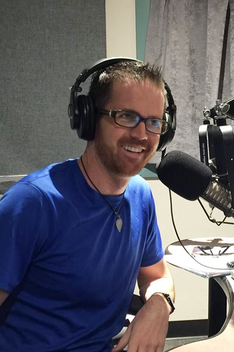
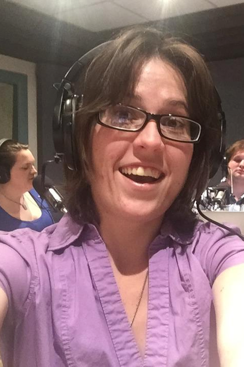
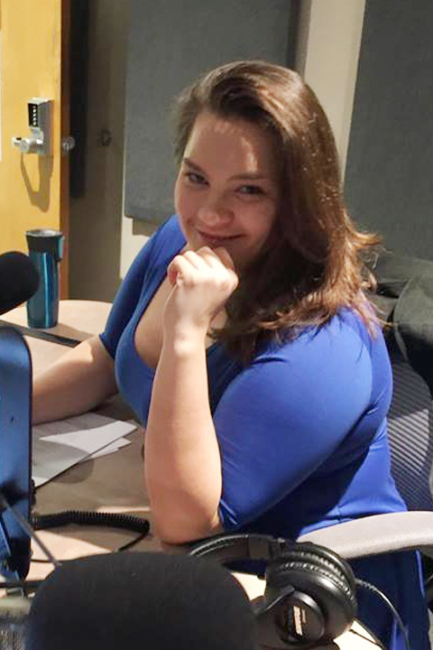

About Us
Here at Breaking Math, we have two primary hosts, and many different guests with a variety of backgrounds. To find out more about the guests we have on, just look through the page. The website is under construction, but pretty soon you'll be able to look up guests by episode.
Hosts
Sophia Baca


Sophia is a Computer Science graduate from the University of New Mexico who has always been passionate about mathematics, and grew up with a math teacher as a mother. She currently freelances as a graphic designer, programmer, and tutor. A passionate artist, she does not see the difference between art and mathematics, and hopes to make that attitude more widespread.
Gabriel Hesch
Gabriel is a math and science educator who taught grades K-8 science and math for five years. He is currently an electrical engineering graduate student and works part time at the Air Force Research Lab at KAFB in Albuquerque, New Mexico. He considers himself a mathevangelist, and strives to make concepts in math and science paletable. He is currently married to his lovely wife Vanessa Hesch.
Jalila Arthur
Jalila Arthur is currently enrolled as a graduate student at the University of New Mexico where she is pursuing a Master's in Public Administration with a concentration in Non-Profit Management. These interests stem from volunteer work in live broadcasting radio for over five years, with a focus on community issues and announcements. Jalila also worked on a multitude of events, both public and private, to publicize and advertise for the benefit of her community.
Guests
Amy Lynn
Amy Lynn is currently a secondary education math teacher at the Public Academy for Performing Arts. She graduated from New Mexico Tech in 2008 with highest honors with a bachelor of science in mathematics and a minor in history. After two years of masters work at NMT (also in math), Amy figured out that education was her true calling. She then took some time off from academia and later went back for her teaching certification. She loves having the opportunity every day to share her love of math!